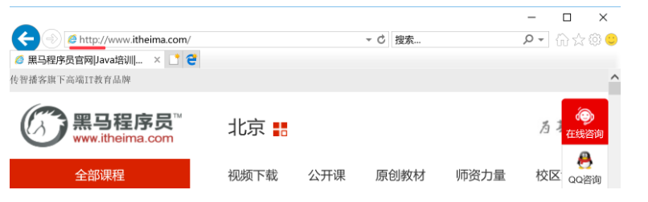

网络基础知识---HTML和HTTP
HTML---超文本标记语言
HTML：是英文 HyperText Markup Language 的缩写，又叫做超文本标记语言。其中：
超文本：就是指可以包含图片、链接，甚至音乐、程序等非文字元素
标记：就是通过**<标记符>内容</标记符>**的格式让内容具有不同的表现形式，从而达到超文本的目的。
我们在互联网上浏览的网页，本质上就是超级文本标记语言。
HTML示例
<h1>这是一个超文本的示例</h1>
<img src='http://www.itheima.com/images/logo.png'></img>

HTTP---超文本传输协议
HTTP：是英文 HyperText Transfer Protocol 的缩写，又叫做超文本传输协议，是互联网上应用最为广泛的一种网络协议。
HTTP示例
在我们日常浏览网页时，HTTP 是会经常出现的，如下图所示：

提示：时下很多浏览器，为了更好的用户体验，默认会隐藏 HTTP 的显示。
HTML和HTTP小结
通过示例不难发现，HTTP 是与 HTML 有关的！其实 HTTP 设计的最初目的就是为了提供一种传输 HTML 页面的方法。其中：
传输：就是指把网页相关的数据，从一台电脑传递到另外一台电脑
协议：就是指两台电脑之间按照什么样的方法来传输数据，是客户端和服务器之间的一个约定
客户端：就是用户的电脑、手机等其他设备
服务端：就是专门提供数据的一台专有电脑